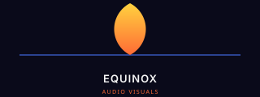
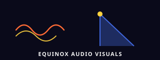
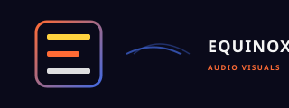
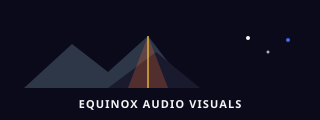
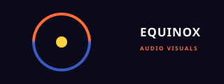

Seven rough directions for Equinox Audio Visuals, using your site palette (navy, orange, yellow, blue).
Text uses generic system fonts so you can judge layout and idea—not final typography. Open each SVG in a tab or zoom in for detail.

1 — Horizon / equinox
Sun on the line: literal “equal night” read, warm gradient, subtle horizon. Feels event-sunset without being wedding-only.

2 — Sound + projection
Waveforms meet a simple “stage light” triangle. Reads AV production quickly; a bit busier at small sizes.
3 — Pure wordmark
No symbol—confidence and clarity. Easiest to pair with any future icon; strong if the name is already known in your market.

4 — E + signal
Monogram in a rounded square with “broadcast” arcs. App-icon friendly; scales down better than full scenery.

5 — Vermont + spotlight
Peaks and a beam from the ridgeline—local without a cliché maple leaf. More illustrative; may simplify to a mark later.

6 — Balanced arcs
Orange/blue halves with a warm center—abstract equinox. Modern and minimal; less literal AV cue (pair with subtitle).
7 — EQ bars
Stacked levels suggest audio + “EQ.” Very adaptable; copper subtitle nods to warmth/gear without loud color.
These are brainstorming aids, not final art. If one direction jumps out, say which number it is—we can refine it (custom type, single-color version, favicon crop) or hand it to a designer as a brief.